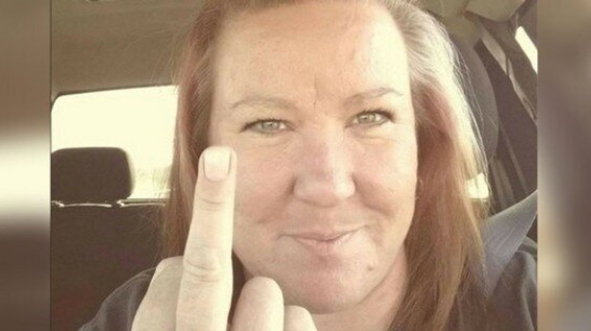

Alexi ”Wildchild” Laiho (oik. Markku Uula Aleksi Laiho; 8. huhtikuuta 1979 Espoo – 29. joulukuuta 2020 Helsinki) oli laulaja-kitaristi ja Children of Bodom -yhtyeen perustajajäsen. Laiho oli ensimmäinen suomalainen kitaristi, josta on tehty artikkeli arvostettuun Guitar World -lehteen. Laiho myös valittiin Guitar World -lehden vuoden 2009 lukijaäänestyksessä parhaaksi metallikitaristiksi.Samassa äänestyksessä taakse jäivät muun muassa Kirk Hammett, Slash ja Zakk Wylde. Myös Soundi-lehti rankkasi Laihon parhaaksi soolo- ja metallikitaristiksi. Vuonna 2011 Laiho voitti maailman parhaan metallikitaristin tittelin brittiläisen Total Guitar -lehden lukijaäänestyksessä Laiho käytti ESP:n kitaroita. ESP valmistaa myös Laihon mukaan nimettyä kitaramallia ESP Alexi Laiho.[1] Laiho käytti ennen Jackson-merkkisiä kitaroita.[5] Laihosta ilmestyi vuonna 2019 Petri Silaksen kirjoittama ja Johnny Knigan julkaisema elämäkertakirja Kitara, kaaos & kontrolli.
